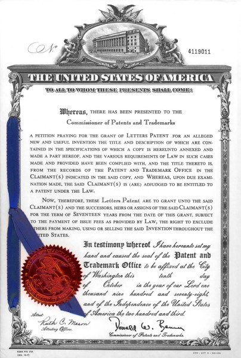

|
Tamer
Özel, Mak. Yük. Müh.
ozel@patents4technologies.com
Texas, USA
Bu makale, yazarýn 29.08.2001 ve 31.08.2001
tarihlerinde TurkCADCAM e-posta grubuna gönderdiði iki mesajdan
derlenmiþtir. Ýlk bölüm, yazarýn 1992 yýlýnda Ýnkilap Kitapevi
tarafýndan yayýnlanmýþ "Amerika Birleþik Devletleri:
Madalyonun Öbür Yüzü" isimli kitabýndan alýntýlar içermektedir.
PATENT
SÝSTEMÝ:
Patent
sistemi teknoloji uretiminin temelini olusturur. Soyle ki;
ABD
patent kanunun iki amaci vardir:
a.
Teknolojik bilginin herkesin ogrenimine, kanunun koruma
suresi sonunda da kullanimina acik olmasini ve dolayisiyla
bilim ve "faydali sanatlarin" ("useful arts"
= teknolojilerin) gelismesini saglamak,
b. Yeni gelistirilen makine, proses, malzeme ve/ya
bunlardaki iyilestirmeleri baskalarina "ogreten"
mucitleri, ogrettikleri bilginin belli bir sure tekelini kendilerine
vererek mukafatlandirip, bildiklerini "ogretmeye"
tesvik etmek.
Diger
bir degisle teknolojik bilginin yayilmasi amac, mucide verilen
tekel bu amaca erismek icin aractir.
Gene
ABD patent kanununa gore;
Patent
verilebilmesi icin, gelistirilen makine, proses, vb'nin yeni,
insanlara faydali olmasi, ve calismasi (yani pratik olarak
icra edilebilmesi) lazimdir.
Patent
yeni ogretiyi o kadar detayli anlatmalidir ki; konusunda uzman,
ortalama zeka duzeyinde birisi atolyeye indiginde onu yapabilmelidir.

Daha büyük görmek için týklaynýz
"Arastirma-Gelistirme
(Ar-Ge) faaliyetlerinin somut gostergesi o faaliyetler sonunda
alinmis olan patentlerdir. Turkiye'de ilk patent kanunu
1879 yilinda cikarilmis, o gunden bugune (1992) Turkiye'de
yaklasik 25.000 patent tescil edilmistir. Bu patentlerin de
yaklasik 21.000'ini yabancilar tescil ettirmislerdir. Bu topraklar
uzerinde yasamis ve yasamakta olanlar -yaklasik 110 yilda-
yaklasik 4.000 patent alabilmislerdir (ustelik patent kanunu
ABD'deki gibi olsaydi, bu patentlerin hemen hemen hepsine,
yeni olmadiklarindan, patent dahi verilemezdi). Amerika Birlesik
Devletleri'nde halen haftada yaklasik 1.800 (binsekizyuz)
patent tescil edilmektedir. Bu patentlerin de yaklasik % 80'ini
universite ve sirketlerin Ar-Ge birimleri almaktadir. Turkiye'de
-yaklasik- 110 yilda alinan patent sayisi Amerika Birlesik
Devletleri'nde yaklasik yirmi gunde alinan patent sayisi kadardir...."
Patent
sisteminin amaci teknolojik bilginin yayilmasini saglamaktir.
ABD'den ilgili ictihat karari aynen soyle demektedir:
"The
promotion of the progress of science and the useful arts is
the main object of the patent system, and reward of inventors
is secondary and merely a means to that end. U.S. v Masonite
Corporation, N.Y.1942 [101, n 5]"
"Patent
sisteminin ana hedefi bilim ve faydali sanaylarin (yani teknolojilerin)
gelismesini tesvik etmektir, mucitlere verilen odul bu gayeye
erismek icin sadece bir aractir ve ikincildir..."
Teknolojik
bilgi yayilacak ki; insanlar onun uzerine birseyler katarak
iyilestime saglayip yeni patentler alabilsinler. Haliyle bir
ulkede gercek anlamda Ar-Ge olabilmesi icin oncelikle yonetimin
toplumda yasayanlarin her istedikleri bilgiye erisebilme altyapisini
kurmasi gereklidir. Teknolojik bilgilere erisebilmenin yolu
da patent kutuphaneleridir.
Bugunku
online hizmet yok iken ABD'de 1992 yilinda yaklasik 60 patent
kutuphanesi vardi. Bu kutuphaneler cografya olarak oyle serpistirilmislerdi
ki; arabanizla en fazla 3 saat mesafede bir kutuphaneye erisebilirdiniz.
Simdi online hizmet var, artik herhalde yeni kutuphanelere
ihtiyac yoktur diye dusunebilirsiniz. Tam tersi! Bugun 80'nin
ustunde kutuphane var (ABD'de) ve yenilerini de acmaya devam
ediyorlar. Bu kutuphanelerin listesine http://www.uspto.gov/web/offices/ac/ido/ptdl/ptdlib_1.html
adresinden erisebilirsiniz.
Turkiye'nin
Osmanli'lardan beri sorunu patentlerin ana amacinin teknolojik
bilginin yayilmasi olmasini iskalamis olamasi ve haliyle altyapiyi
da kurmamasi. Eski patent ofisin adi "Sinai Mulkiyet
Dairesi" idi. Patent'e de "Ihtira berati" derlerdi.
Patent kokunde "open" demektir. Bugun Sinai Mulkiyet
Dairesi'nin adini Patent Ofis'e degistirdiler, ama hala patent
sisteminin ozu anlasilmis degil.
Patentlerin
uluslararasi uygulamasina gore patent icin ilk basvuruyu yaptiktan
bir yil icinde diger hangi ulkelere basvuracaksaniz bu basvuruyu
yapmaniz gerekir. Aksi takdirde o ulkelerde basvuru hakkinizi
kaybedersiniz. Bunun pratikte anlami; ilk patent basvurusundan
bir yil icinde basvuru yapmadiginiz ulkelere patentinizi hibe
etmis olursunuz.
Bugun
ABD patentlerinin (bugunlerde yaklasik 6,3 milyon (altimilyonucyuzbin))
%99'u Turkiye'de (ve diger geri kalmis ulkelerde) tescil edilmemis
ve edilmiyor. Peki Turkiye'nin yapmasi gereken ne? Benim soylememe
gerek var mi? Guney Kore, Taiwan, Cin Halk Cumhuriyet'i nasil
yaptilar ve yapiyorlarsa; pratikte hibe edilen bu patentleri,
her turlu teknolojik bilgileri uretime koyarak sanayi devrimini
(devrim= cabuk ve kalici degisim) yasamasi.
Daha
onceki yazimde dedigim gibi, US Patent and Trademark Office'in
online hizmeti bir nimet. www.patents4technologies.com
sitesinde bu site sayesinde Amerikalilara patentleri nasil
kullanabileceklerini ogretmeye calisiyorum. Onlarin dezavantaji
koruma suresi devam eden patentlerin ogretilerini ogrenebilirler
ancak yapamaz, satamaz ve kullanamazlar. Turkiye'dekilerin
boyle bir sorunu yok. Bahsettigim sitenin bolumleri sunlar:
1.
Mahkemelerin ictihatlarina (yorum ve kararlarina) dayanarak
patent sisteminin nasil calistigi izah ediliyor. (Inanmasi
zor gelebilir ama Amerikalilarin da yaklasik % 98'i patent
sisteminin gercekte nasil calistigindan bihaberdir)
2.
Patentlerle teknolojiler tarihi: Teknolojik gelismelerde kilit
rol oynamis bircok patentin konu ve numaralari var. USPTO
sitesine gidip butun bu patentler teker teker etut edilebilir.
Turkler icin bunun; o patentlerin tarihlerinde Anadolu'daki
insanlarin nelerle istigal ettiklerini karsilastirma acisindan
ilginc ve dusundurucu olabilecegini saniyorum. (Diger bir
degisle dunya nasil iskalanmis.)
3.
"Tibbi siringa imalati"na yonelik patent arastirmasi
ornegi ile pratikte USPTO sitesinin nasil kullanildigini anlatiyorum.
Erisilen tum patentlere gene USPTO sitesinden ulasilabiliyor,
ve etud edilebiliyor.
4.
Patentler nasil hayata gecirelebilir anlatiliyor. Patentleri
hayata gecirebilmek icin temel olan "makine imalati"dir.
Makine imalati da patentlerden ogrenilir. Makine imalati'nda
toplasaniz toplasaniz yaklasik 200 mekanizma kullanildigini
gorecekseniz. Bu mekanizmalarin ve makine imalatinin ogrenilebilecegi
cok guzel patentlerin listesi veriliyor.
ONLINE
PATENT KUTUPHANELERI:
Bugun
(aslinda epeyi yildan beri) artik tum ABD (ve diger sanayilesmis
ulkelerin) patentlerine online olarak ulasma imkani var. Aþaðýda
verilen adreslerdeki patentlerde (tabuttan rokete, pilden
silaha, internet firmalarinin patentlerinden, genlere, boraxin
islenmesine kadar) her konuda en eskisinden en son teknolojisine
kadar her turlu bilgiye erisebilirsiniz. Asagida bunun nasil
oldugunu ve patent arastirmalarini nasil yapabileceginizi
oldukca detayli olarak anlatmaya calisacagim.
Benim
en yaygin kullandigim iki site var:
1.
U.S. Patent and Trademark Office'in (PTO) sitesi: http://164.195.100.11/netahtml/search-adv.htm
(1A)
2.
Digeri Derwent'in sitesi: http://www.delphion.com/patquery
(2A)
PTO
sitesinde 1790 (binyediyuzdoksan) yilindan gunumuze kadar
alinmis tum ABD patentlerinin resimlerini, 1976'dan beri alinmis
patentlerin de ayrica girilmis metinlerini bulabilirsiniz.
Resimler ile metin arasindaki fark su: Resimlerde patentin
sayfalarinin resimleri cekilip goruntu olarak bilgisayara
yuklenmistir. Yani hem teknik resimleri gorup hemde specifikasyonlari
okuyabilirsiniz. 1976'dan sonra ayrica metinleri girmisler.
Bu da "keyword" ile "search" yapma imkani
sagliyor. 1790'dan bu yana tum patentlerin resimlerinin varligi
pratik olarak bir "patent kutuphanesi" anlamina
geliyor. Ustelik bilgisayar ortaminda patent arastirmasi yapmak
cok da hizlanmis oluyor. PTO sitesi simdilik bedava.
Derwent
sitesi bir kac ay evveline kadar bedava idi. Simdi parali,
ancak bazi temel ve ise yarar arastirmalari hala bedava yapiyor,
birazdan asagida ornek verecegim.
Derwent
sitesinde 1972'den buyana alinmis tum ABD patentlerinin resim
ve metinleri var. Pratik olarak her iki site de benzer hizmetleri
veriyor. PTO sitesi 1790'dan buyanaki resimleri barindirdigindan
benim tercihim.
Derwent
sitesinin verdigi su arastirma hala bedava ve benim cok isime
yariyor: Bir patenti daha sonra hangi patentler referans almis.
Bu sekilde cok referans gosterilmis bir patent o teknolojideki
kilit patentlerden biri anlamina geliyor. (Ayni hizmet PTO'da
da var ama Derwent'in formati daha detayli)
Patentlere
vakif olanlar ve patent arastirmasi yapmasini bilenler hemen
1A, 2A "link"lerine gidebilirler.
Asagidakiler
(TIFF OKUYUCU bolumu haric olmak uzere) konuya yeni olanlar
icindir.
PATENT
ARASTIRMASINI NASIL YAPACAKSINIZ?
Nasil
ki; duvar orulurken her tugla bir asagidakinin uzerine konularak
duvar yukselir, her patent de bir cok daha evvelden alinmis
patentlerin uzerine yeni bir bilgi ilave edilmesiyle ortaya
cikmistir. Dolayisi ile tek bir patenti alip onu uretime sokarim
gibi bir dusunceye sakin kapilmayiniz.
Patentlere
eristiginiz zaman goreceksiniz ki her mucit kendi icadini
yaparken hangi patentlerin bilgilerini kullandigini listeler.
Dolayisi ile buyuk bir ihtimalle sizin de onun referans verdigi
patentlere de, hatta bu patentlerin referanslarina da ulasmaniz
gerekecek. Belli bir noktaya geldiginizde artik o teknolojiyi
gecmisi ile birlikte bildiginizi hissedecesinizdir. Iste o
noktada istediginiz patentteki ogretileri uretime koyabilirsiniz.
Akliniza
"aman ben bu patenti caliyor durumuna dusuyorum, basima
kanunen neler gelir?" gibi bir soru gelebilir. Bu sorunun
cevabi "hic bir sey gelmez"dir, zira o patentlerin
sadece yaklasik binde biri Turkiye'de tescil edilmis, binde
999'u tescil edilmemistir. Patentlerdeki bilgileri ogrendikten
sonra bir patenti uretime sokmaya karar verirseniz ve de cok
korkak birisi iseniz, o zaman o patentin Turkiye'de tescil
edilip edilmedigini Turk patent ofisine sorabilirsiz. Ancak
boyle bir olasilik, demin dedigim gibi, yok denecek kadar
azdir. (Turkiye 3. dunya ulkesi oldugundan "first class
patent countries" denen sanayilesmis ulkeler patentlerini
Turkiye'de tescil ettirmek ihtiyacini hissetmiyorlar.)
Patent
arastirmasi yapmanin bir kac yolu var. Bunlarin icinde en
cok isinize yarayacak uc (3) yol sunlar:
A.
Keyword
1A
ve 2A adreslerine gittiginizde "keyword"u yazdiginizda
o "keyword"e rastlanan tum patentlerin listesini
size getirecekler. O patentleri tarayarak isinize yarayabilecekleri
ayiklamaniz gerekecek. (PTO'da yillar kismina "ALL YEARS"
yazmayi unutmayin)
Daha
detayli izahatlari 1A ve 2A'ya gittiginizdeki pencerelerde
bulacaksiniz.
B.
Classification (Konusuna gore arastirma)
http://www.uspto.gov/web/offices/ac/ido/oeip/taf/moc/
(1B)
1B
adresine gittiginizde konularina gore ABD patent siniflandirmasini
bulacaksiniz. Bu sayfayi tarayarak ilgilendiginiz konulari
bulabilirsiniz. Her sinifin alt siniflari vardir. Sinifi sectikten
sonra alt siniflari tarayarak kendi konunuzu bulursunuz. (Bugun
yaklasik 450 sinif, gene yaklasik 150.000 kadar alt sinif
vardir). Sinif ve alt sinifinizi bulduktan sonra karsiniza
o konuda 1790'yilindan beri alinmis patentlerin listesi cikar.
Teker teker tarayarak isinize yarayanlari ayiklarsiniz.
Bazi
konularda, ornegin tentur diyot'ta kullanilan "iyot"un
uretim teknolojisi cok oncelerden oturmus olabiliyor. (Iyot'ta
1930'larda). Boyle bir durumda PTO'daki patent resimlerinden
her turlu bilgiye erisebiliyorsunuz. Derwent'te boyle bir
imkan yok.
C.
Sirket ismi
http://164.195.100.11/netahtml/search-bool.html
(1C)
ABD'de,
veya herhangi diger sanayilesmis ulkede, ilgilendiginiz konuda
uretim yapan bir firma biliyorsaniz, o firmanin ABD'de almis
oldugu tum patentleri 1C adresinden bulabilirsiniz. Soyle
ki;
1C
adresinde karsiniza "Boolean Search" penceresi gelecektir.
"Term 1" yerine firmanin ismini yaziniz. "Field
1" yerine seceneklerden "Assignee Name"i seciniz.
Bir de hemen biraz asagida "Select Years" I goreceksiniz.
Seceneklerden "All Years" I secip, search deginiz.
Size o firmanin sahip oldugu tum patentlerin listesini dokecektir.
Ornegin
Fisher-Price firmasi ABD'de bebek ve cocuk urunleri ureten
firmalardan biridir. Arastirirsaniz 74 patenti oldugunu goreceksiniz.
Ayni
arastirma degisik firmalar icin su neticeleri verir:
Firma
(Tescil edilmis patent sayisi)
Microsoft
(1710)
Intel (4617)
Mitac (19) (Taiwan'li bilgisayar ureticisi)
Ford (6553)
Hyundai (2146)
Kia (82)
Toyota (7355)
Honda (6989)
Tofas (0)
Firestone (584) (ABD'li lastik ureticisi, Lassa'ya montaj
atolyelerini satan)
Lassa (0)
Sabanci (0)
TIFF OKUYUCU:
PTO'daki
yukarida anlattigim tum hizmetlere verdigim "link"lere
basarak hemen erisip arastirmalari yapabilirsiniz. Yani firmalarin
patentlerini gorebilir, keyword arastirabilir, patentlerin
metinlerini okuyablirsiniz. Ancak patentlerin resimlerine
erisebilmek icin "TIFF" dokumanlarini okuyabilen
bir "plug-in" gerekmektedir. Netscape browser kullananlara
Netscape kendisi boyle TIFF plug-in'lerin adreslerini veriyor.
Bu plug-in'lerin bazilari bedava. Bedava olanlari deneyebilirsiniz.
(Download etmeniz gerekecek). Ben bedava olan denedim, memnun
kalmadim.
Sonra;
http://www.cartesianinc.com/Products/CPCLite/Download
adresinden "CPC view" denen programi satin aldim
($19.95) ve kullaniyorum. Memnunum. Programi 2 hafta bedava
deneyebiliyorsunuz. (Ayni adreste Avrupa ve Japon patentlerine
erisme link'leri de oldugunu goreceksiniz. Ayni hizmet PTO
ve Derwent'te de var).
Explorer
kullananlar icin bir kac TIFF kaynagi adresi daha vereyim:
http://www.tmmgroup.com/trudef/docs/plugin.html
http://www.innomage.com/Products.htm
http://www.acordex.com/browseProd/VTplugin.html
SONUC:
Yukarida
soyledigim gibi patent arastirmasi ipucu cekilerek, her patentin
uzerine kuruldugu diger patentleri arastirarak yapilir. 20.
yuzyilin basinda Japonya, ikinci yarisinda Guney Dogu Asya
Kaplanlari diye anilan Guney Kore, Taiwan vb yakin bir gecmiste
Cin Halk Cumhuriyeti; zamaninda patent kutuphaneleri kurarak,
bu engin bilgiler sayesinde sanayi devrimlerini gerceklestirdiler.
ABD
PTO'sunun vazifesi patentlerdeki bilgilerin ABD halkina yayilmasini
saglamak. Benim sizlere burada verdigim adresler o hizmetin
bunyesinde gerceklestiriliyor. Diger bir degisle ABD halkina
saglanan bu imkan ABD Patent Ofisi sayesinde herkesin elinin
altinda. Yeter ki insanlar farkina varsin, ve ABD PTO'su bu
hizmeti yabanci ulke halklarina yasaklamasin.
|